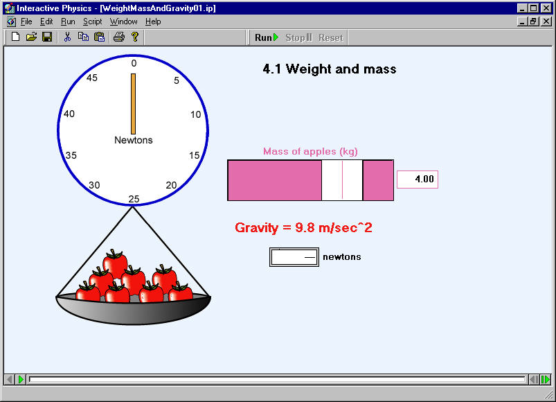
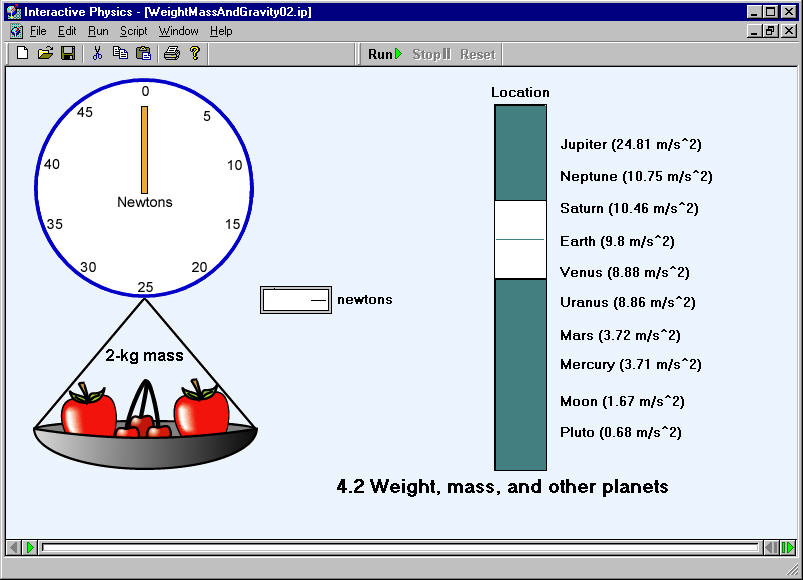
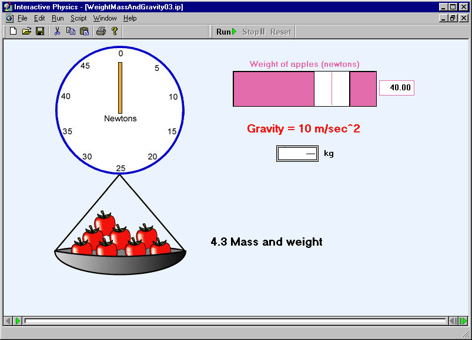

Weight, Mass, and Gravity
To begin, click on a simulation. Internet Explorer may launch a "Download dialog box" or Netscape may issue a "Warning dialog box". Select "Open the file".
4.1 Weight and mass 
4.2 Weight, mass, and other planets 
4.3 Mass and weight 